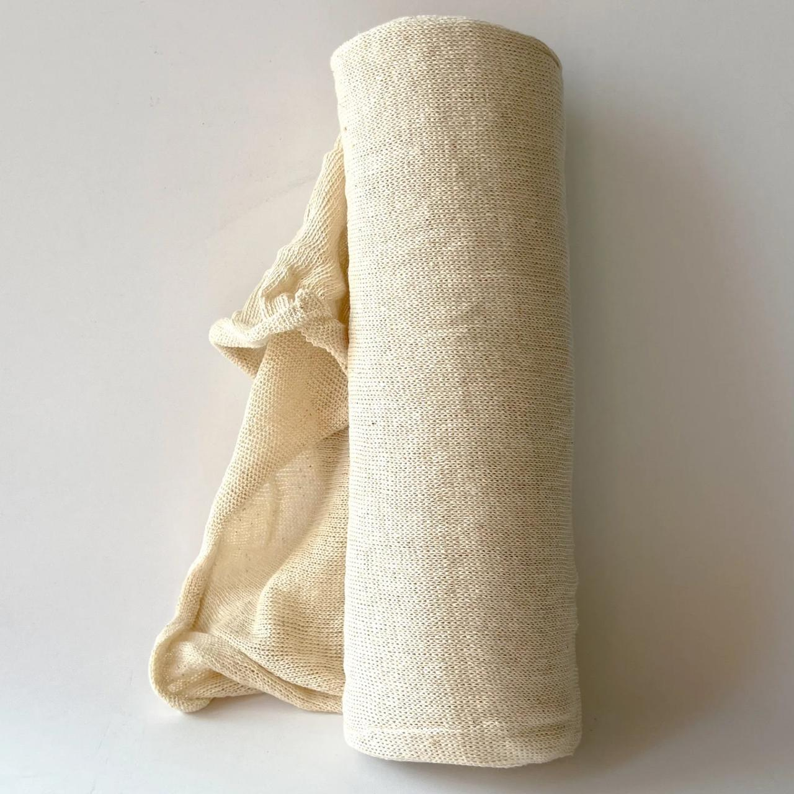

SPECIALTY & INDUSTRIAL WIPERS
SPECIALITY CLOTHS

Cheese Cloth (Undyed, White) Ultra-Soft
Premium cleaning grade cheese cloth, crafted from 100% cotton for exceptional softness and delicate surface wiping.
| Size | 36 Inches width with options of length. |
| Making | 100% cotton Ultra soft, absorbent and cleaning grade. |
| Construction | 12 x 20 Threads / 40s x 40s count. |
| Packaging | 2, 4, 70, 80 and 100-yards retail packing. |

Mutton Cloth (Stockinette) High Stretch
Tubular knit fabric (Stockinette) known for high stretch and absorbency. It can be cut to any length.
| Material | 100% Cotton Knit |
| Elasticity | High Stretch (Tubular) |
INDUSTRIAL WIPERS

Shop Towel (Grade A & Grade B) Industrial Grade
Durable, overlocked shop towels designed for heavy industrial use, available in uniform and non-uniform sizes to suit your requirements.
| Size | 14×14 inch uniform Grade A, 12×12 inch non-uniform Grade B. |
| Color | White, red, blue, and natural. |
| Dimensions | 10x10s construction. |
| Stitched | Four Sides overlocked. |
| Packaging | Retail 50 pcs pack, 2500 pcs bale, and 12500 pcs (750 lbs). |

Huck Towel (Blue) Lint-Free
Professional-grade blue huck towels, featuring a tight weave and durable hemming for high-precision glass and window cleaning.
| Size | 15×25 inches. |
| Dimensions | 10s x 10s Construction. |
| Stitching | Four sides hemmed. |
| Packaging | Shipped in Bulk and retail packaging. |
THERMAL & FLANNEL RAGS

New Thermal Rags Textured Grip
New high-quality thermal blankets converted into durable rags, providing a unique textured weave for trapping dust and heavy absorption.
| Size | 15×25 Inch. |
| Color | White, blue, red, sand and green. |
| Stitching | Four Side hemmed. |
| Packaging | Available in retail and bulk packing. |

Flannel Rags (White) Extra Soft
Premium white flannel wipers, chemically processed for maximum fluid retention and stitched on all sides for lasting durability.
| Size | Minimum Size of 15×25 inch Uniform. |
| Making | Processed to make the rag extra absorbent. |
| Stitched | All side stitched overlocked. |
| Packaging | Available in retail and bulk packing. |